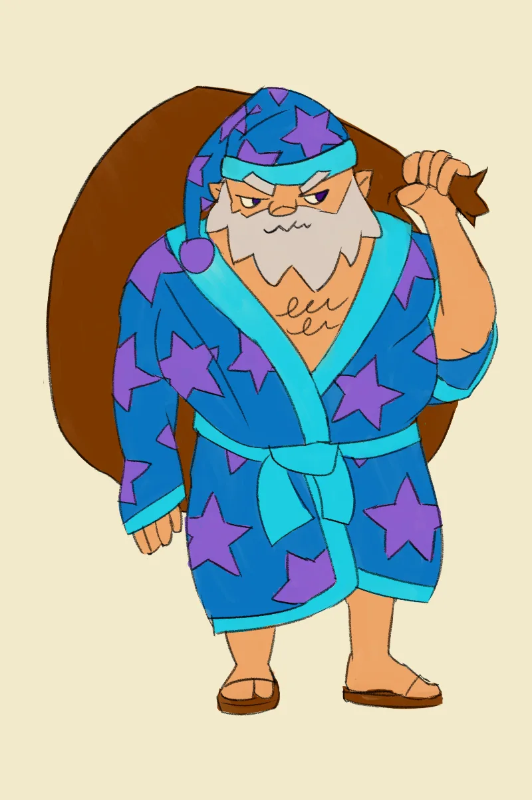

Backend engineer who builds reliable systems, and the AI agent workflows that ship them.
I’m a full-stack developer with 15 years of experience in fintech, enterprise software and games, who loves good design, good code, and good people. I work as a Software Developer at CSI (formerly Apiture), building the backend for a digital account opening platform used by banks and credit unions, in TypeScript on Node, NestJS and Angular.
My favorite problems are backend platforms and third-party integrations: scheduled jobs that run exactly once across every server, event pipelines on AWS, and e-signature and identity verification vendors wired in behind clean adapters. Before CSI I spent eight years at Hyland building web apps in C# and TypeScript on .NET and Angular, and I worked on the mobile RPG Eldrum: Red Tide (iOS / Android) at Act None Studios. These days I use AI agents every day to take work from spec to tested code, at my day job and in my games. Here’s my resume (PDF).
I come from a family of educators, and teaching still matters to me. I volunteer with Hy-Tech Club, teaching programming to students in Northeast Ohio and leading them on projects for local nonprofits.
I’m from the Midwest. Ohio, specifically. Cleveland, even more specifically. I love my Rust Belt city: I’m 10 minutes from downtown in one direction and 10 minutes from the Metroparks in the other.
I have a Bachelor’s in Visual Communication Design from Kent State University, with a focus in interaction design and computer science. Design school taught me to start from the person using the thing, a habit that’s shaped every API, tool and menu I’ve built since. Good UX is non-negotiable.
I make games with agentic development: AI agents like Claude doing real chunks of the work inside a process I’ve designed. Automated cloud agents triage ideas and bugs, refine them into specs, review them, implement them in Godot, and playtest the result, capturing screenshots and video of the scenarios that matter. My job is the part that makes it work: designing the process, deciding what “done” means, reviewing every change, owning how the game feels to play, and making the art.
Rubbley is a 2.5D physics action-puzzle game about bending gravity, and it’s been with me since 2018, when I wrote the first design doc. Later I built a prototype in Unity, but it was janky, it wasn’t fun, and it didn’t match the game in my head. This latest push, in Godot with agents doing the legwork, is the closest it’s ever been. Here’s how its gravity works.
Fiber is a four-player co-op platformer where the whole world, and everyone in it, is sewn from thread: cozy guild towns, handmade gear and friends to rescue on every run, with the party play of MapleStory as a big inspiration. I’m making it with my friend Stephen Cassidy, with concept art from his sister Dana Cassidy. Take a tour of Fiber.
Design school never really ended for me. I still draw for fun: character design, figure practice and painting studies. My tools of choice are Clip Studio Paint, Procreate and Aseprite, plus Blender when a character needs to go 3D. Pixel art is the practical side of the hobby, since the sprites I draw in Aseprite go straight into my games.
